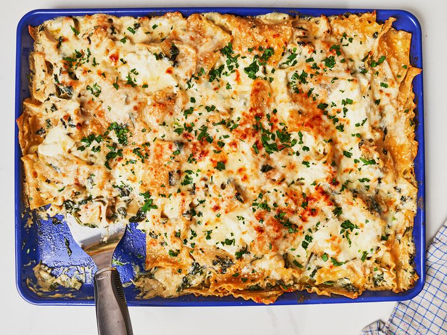

Home
Sheet Pan Chicken Alfredo Lasagna

Description
Use a sheet pan to create this easy chicken Alfredo lasagna with store-bought Alfredo sauce and shredded chicken.
Ingredients
- 1 pound lasagna noodles
- 2 tablespoons olive oil, divided
- 3/4 cup finely chopped onion
- 5 ounces fresh spinach, chopped
- 22 ounces Alfredo sauce (such as Prego Homestyle Alfredo)
- 3 cusp cooked, shredded chicken
- 2 cups shredded mozzarella cheese, dived
- 1/4 cup torn fresh basil leaves (optional)
- 1/2 cup ricotta cheese
- 1/2 cup freshly grated Parmesan cheese
- 2 tablespoons chopped fresh parsley
Directions
- Bring a large pot of salted water to a boil. Break lasagna noodles into 4 to 5 pieces and drop into the boiling
water. Cook for 8 minutes, stirring occasionally, until just al dente. Drain and set aside.
- Meanwhile, heat 1 tablespoon olive oil in a large deep skillet over medium-high heat. Add onion and cook until
soft, stirring constantly, about 3 minutes. Add spinach and cook, stirring constantly until wilted and liquid has
evaporated. Stir in alfredo sauce and cook for 1 minute. Stir in chicken, 2/3 cup mozzarella and basil, if using.
Remove from heat and stir in cooked pasta.
- Preheat the oven to 375 degrees C (190 degrees C).
- Drizzle remaining olive oil evenly over a 18 x 13-inch rimmed baking sheet (half sheet pan). Pour lasagna
mixture into the pan and spread it evenly to the edges. Dollop ricotta randomly over the pasta and sprinkle with
remaining mozzarella and Parmesan cheese.
- Bake in the preheated oven until lightly browned and bubbly, about 25 minutes. Sprinkle with parsley and serve.